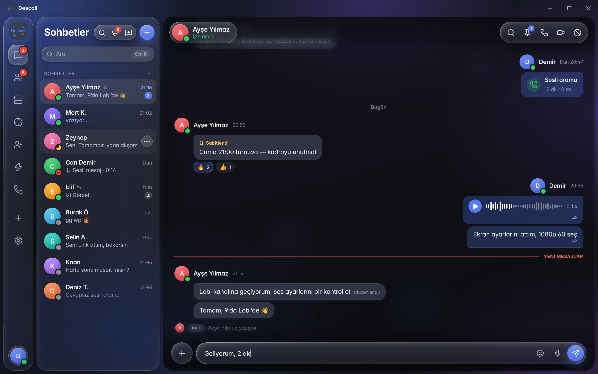

Türkiye için en iyi Discord alternatifi: Descall
Discord alternatifi arayan Türk oyuncu ve arkadaş grupları için Descall: gerçek sunucular (roller, kanallar, şablonlar), ücretsiz sohbet, sesli/görüntülü arama, ekran paylaşımı ve LFG — Nitro zorunluluğu olmadan.

Neden Türkiye’de Discord alternatifi aranıyor?
Birçok ekip Discord’u seviyor ama Nitro baskısı, ağır arayüz ve LFG için bot karmaşası istemiyor. Descall, Türkçe arayüz seçeneği, hazır sunucu şablonları ve oyuncu odaklı Play sekmesiyle daha hafif bir Discord alternatifi sunar. Özellikle 5–100 kişilik klanlar, okul grupları ve oyun partileri için roller + kanallar + ses odası ister — bot labirenti olmadan.
Descall ile neler yaparsın?
- Sunucular: yazı / ses / stage kanalları, kategoriler ve yavaş mod
- Roller ve kanal izinleri (Admin, Mod, VIP…)
- Hazır şablonlar: oyun, arkadaş, topluluk, ders, yayıncı
- Anlık mesajlaşma ve DM’ler
- Sesli / görüntülü arama + ekran paylaşımı
- LFG lobileri ve parti kodları
- Windows masaüstü, web ve Android
- Ücretsiz temel özellikler — kozmetikler DesCoin ile isteğe bağlı
Türkiye’de Discord alternatifi seçerken nelere bak?
Ücretsiz ses/görüntü, sunucu rolleri, Türkçe arayüz, mobil erişim ve davetle hızlı ekip toplama çoğu grup için yeterlidir. Dev bot ekosistemi veya on binlerce üyeli kamu sunucuları için Discord hâlâ güçlüdür; Descall klan, sınıf ve oyuncu toplulukları için tasarlandı.
Discord benzeri uygulamalar veya bir Discord muadili arıyorsan önce işe bak: sadece mesaj mı, yoksa ses + ekran paylaşımı + sunucu mu? Descall ikinci grup içindir — klan, sınıf ve oyun partileri için Türkçe arayüzlü, ücretsiz bir Discord alternatifi.
Hemen denemek için ücretsiz hesap aç; masaüstü istersen Windows kurulumunu kullan.
Sık sorulan sorular
Daha hafif bir Discord alternatifi denemeye hazır mısın?
Ücretsiz Descall hesabı oluştur — sohbet, ses, ekran paylaşımı ve LFG tek yerde.